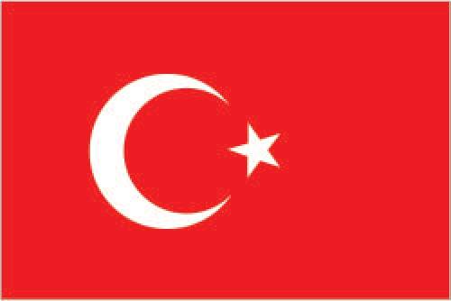
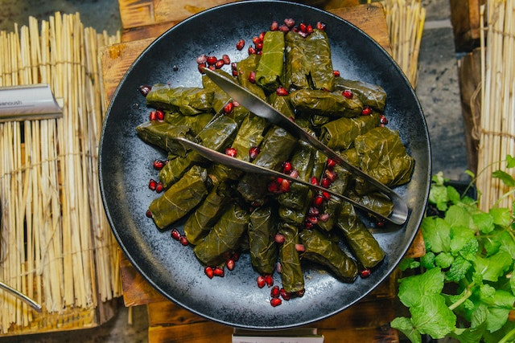

Turkey
Since it is my hometown, I can list several culinary adventure routes in Turkey. It is mostly famous for its grills and desserts. Despite the fact that kebab types are most known meals, my favorite Turkish food is a dessert, baklava - layers of thin sweet dough with nuts. In addition to grill and kebab fame of the region, it is also possible to find many vegan and vegetarian alternatives. For instance dolma, vine leaves or pepper stuffed with minced meat or rices, is one of the alternatives for vegetarian and non-vegetarian menus.

Turkey Flag (Image from CIA World Factbook)

Dolma for Vegetarian and Non-Vegetarian Menus (Image from Pexels)